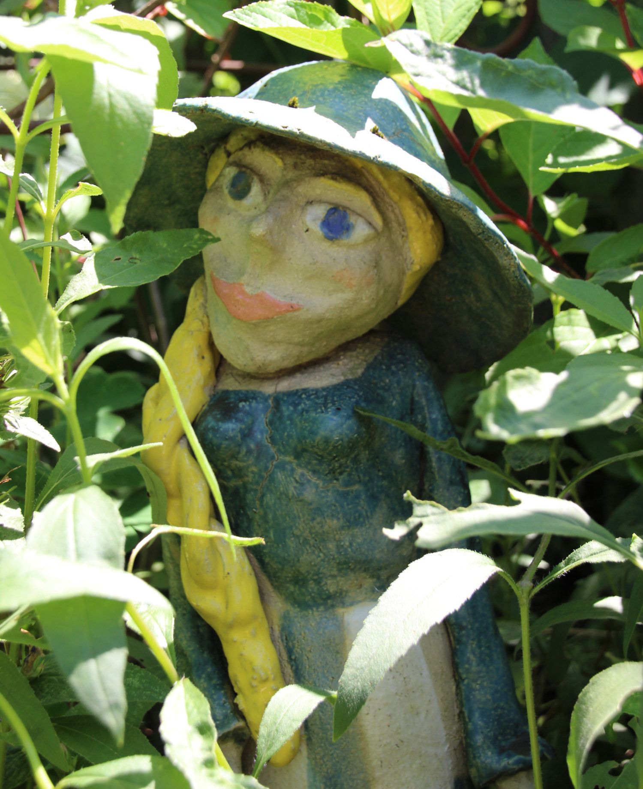

Produktinformationen
Alle meine Tonfiguren sind mit Liebe gestaltet und von Hand gefertigt. Dies bedeutet aber auch, dass ich jede Figur oder Form nach keiner Vorlage gestalte, sodass Form, Farbe und Größe von den Beispielbildern abweichen können. Durch meine sorgfältige und liebevolle Arbeit an meinen Objekten, werde alle Figuren erst auf Anfrage fertiggestellt. Für die Fertigstellung musst du je nach Größe und Aufwand mit 1-3 Monaten Lieferzeit rechnen.
Mit dem Material Ton stehen mir verschiedene Farben zur verfügung. Von weiß mit Punkten, reinem weiß, bis hin zu rötlichen und braunen Tönen. Damit kann ich meine Objekte ganz individuell gestalten. Darüber hinaus glasiere ich mit Farben, die ebenfalls ein breites Spektrum an Farben ermöglichen.
Wichtig ist mir, dass alle Tonprodukte sehr hoch gebrannt sind. Dafür sind sehr Temperaturen über 1200°C erforderlich. Dadurch sind alle Objekte winterhart und zerspringen im Garten auch bei Minusgraden nicht und können lange Freude bereiten.
